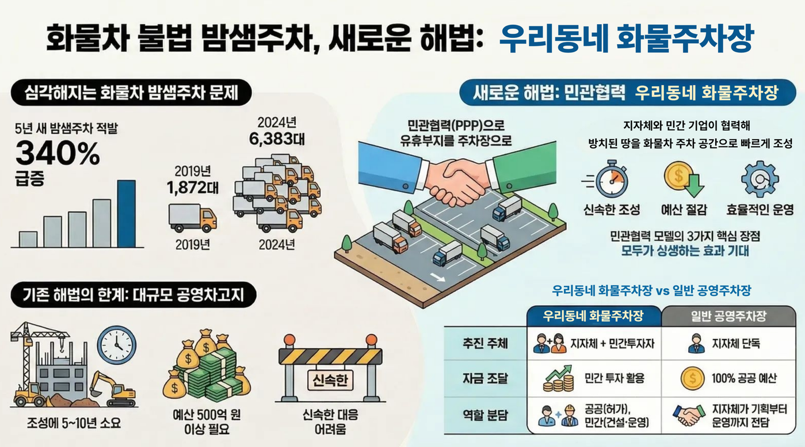

👀우리동네 화물주차장 한방컷
복잡한 설명보다 그림 하나로 이해해볼까요? 민관협력 모델의 핵심을 정리했어요.

👆 이미지를 클릭하면 크게 확대해서 볼 수 있어요!
×

📺 언론이 주목한 화물주차장
전국 최초의 아이디어로 많은 뉴스에 소개되었어요. 기사 제목을 클릭하면 새 창에서 열립니다!
▶
SBS 8뉴스
'우리 동네 화물주차장'으로 불법주차 해소
주민들은 안심하고, 기사님들은 편하게! 현장의 생생한 목소리를 들어보세요.
영상 보러가기 →
📰 인터넷 기사
구리남양주뉴스
머리 아픈 '밤샘주차 문제' 남양주시가 풀었다
민관협력으로 혈세 투입 없이 주차난 해결. 획기적인 '남양주 모델' 심층 분석.
기사 읽기 →
🚛 조성 협약
뉴스후플러스
남양주시, 공급 중심 화물차 정책 선도
민간 기업과 손잡고 전국 최초로 분산형 주차장을 만들기로 약속했어요.
기사 읽기 →
📰 민관 거버넌스
국민일보
남양주시 '숨은 땅 찾기'로 예산 없이 화물차 주차장 확충
공인중개사와 협력해 동네 구석구석 숨은 땅을 찾아 주차 공간으로 변신시킵니다.
기사 읽기 →
🛑 왜 필요했을까요? (문제점)
"밤마다 집 앞에 큰 트럭이 있어서 무서워요."
주민들의 소음, 매연, 교통사고 위험에 대한 불만이 많았어요.
💡 남양주시의 해결책!
"놀고 있는 땅(유휴부지)을 빌려주세요!"
도심 내 장기 미활용 토지를 발굴해 민관이 상생하는 '우리동네 화물주차장'을 만들었어요.
✨ 1석 3조의 효과
주민들
길이 안전하고 깨끗해졌어요!
기사님들
집 근처에 편하게 주차해요!
남양주시
예산을 크게 아꼈어요!